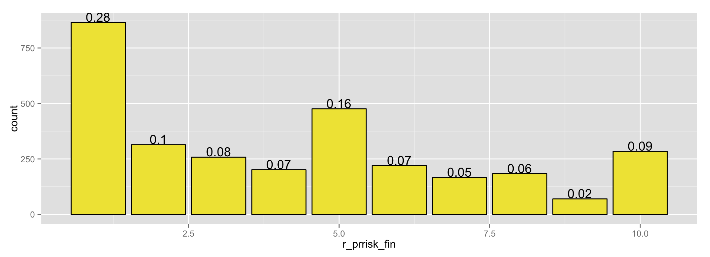
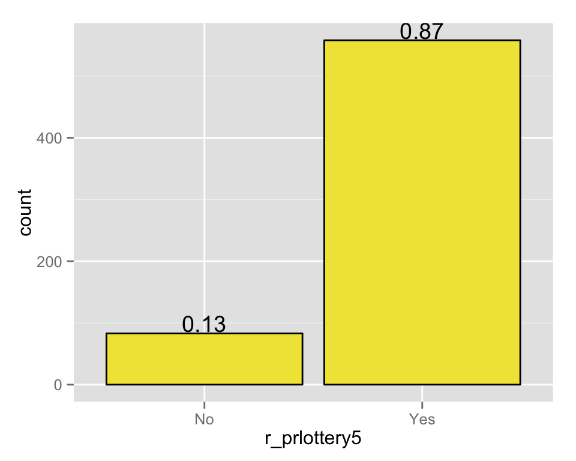
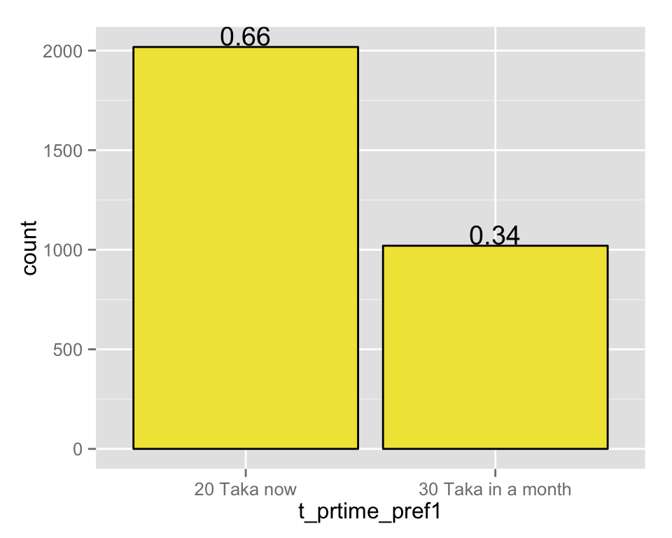
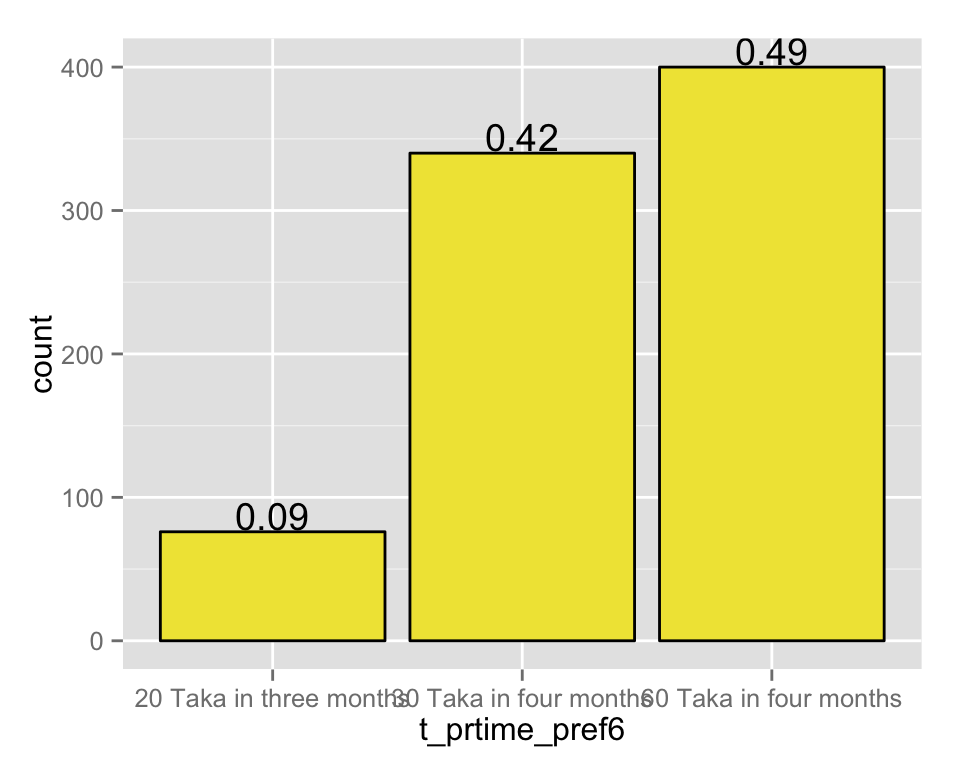

Baseline Data: Psych Measures
Updated 26 June, 2015
risk preferences
10 step ladder
In financial matters, are you generally a person who is fully prepared to take risks or do you try to avoid taking risks? Please answer on the scale from one to ten, where the value 1 means “not at all willing to take risks” and the value 10 means “very willing to take risks.” “r_prrisk_fin”

Overall, are you a person who is fully prepared to take risks or do you try to avoid taking risks? Please answer on the scale from one to ten, where the value 1 means “not at all willing to take risks” and the value 10 means “very willing to take risks.”
lottery
6 tradeoffs, win 100 T if head everytime. If tails, lose:
10 T
20 T
30 T
40 T
50 T 
60 T 
time prefeences
smaller sooner vs larger later
6 tradeoffs, 20 T now or…
30 T in one month: 
60 T in one month:
30 T in two months:
60 T in two months:
30 T in four months:
60 T in four months: 
10 step ladder
Some people like to have everything now, other people are willing to wait. Now imagine that on the bottom step of this ladder, the first step, are the people who are not very patient, who almost always want to have things now, and 10 is the most patient, where you are almost always willing to wait. Where do you stand?
trust and altruism
"trualtr_500"
"trutrust1"
"trutrust2"
"trutrust3" locus of control
"locprobl"
"locmisf"
"loccontr"
"locluck"
"locmanage" work satisfaction
"wsoverall_sat"
"wswage_sat"
"wscond_sat"
"wsbenefits_sat"
"wsrecommend"